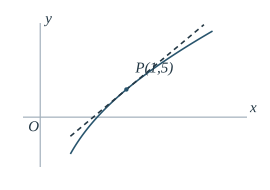
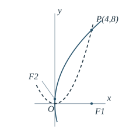
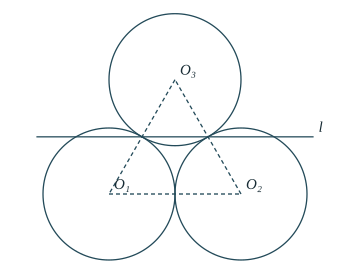
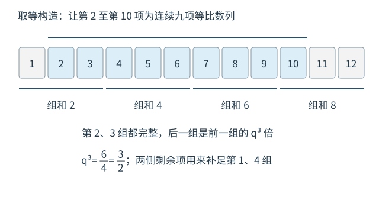
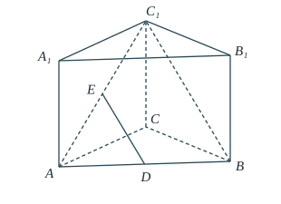
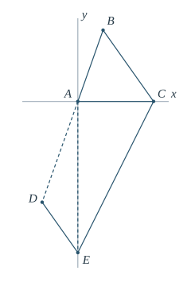
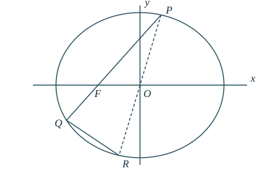
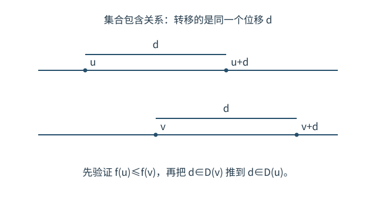

第 1 题 先准确理解定义，再进行运算
题目
数据为 ，求中位数。所用高中知识
一组数据的排序；奇数个数据的中位数定义。
读题与思路
中位数由排序后的位置决定，不是原来书写顺序的中间一项，也不是平均数。
第 1 步 从小到大排列
第 2 步 找中间位置
样本量为 ，是奇数，中间位置为第 个。该位置的数据为 。
答案与检查
选 B，中位数为 。它左、右各有两个数据，位置符合定义；不需要计算五个数的和。
19 题完整解析 · 所用高中知识 · 读题与思路 · 分步计算与证明 · 答案与检查
版本提示：本册修订用户提供的 2026 数学试题整理稿。其题型背景可与公开报道交叉核对，但本次未取得考试主管机构发布的完整卷面，不能将每一处题干、符号与选项认定为已获官方认证。以下答案严格对应本册明确保留的题目。
一组数据的排序；奇数个数据的中位数定义。
中位数由排序后的位置决定，不是原来书写顺序的中间一项，也不是平均数。
样本量为 ，是奇数，中间位置为第 个。该位置的数据为 。
选 B，中位数为 。它左、右各有两个数据，位置符合定义；不需要计算五个数的和。
平面向量基本定理；不共线向量的表示唯一性；向量移项。
题目明确两向量不共线，所以同一个向量用它们表示时，对应系数必须相同。下面把这一结论的理由写出，避免直接跳到答案。
若 ，上式可写成 这表示两向量共线，与题设矛盾。因此 ，即 。
再代回得 。不共线保证 ，所以 。
选 A，。回代后两边均为 。
三角函数诱导公式、特殊角值；集合的交集与元素互异性。
先把 的每个元素算成数，再找与 共有的元素。负号由象限决定。
因此 。
和 同时在 中； 不在 中， 不在 中。因此
选 C。检查交集中的每个元素都同时属于两集合，且没有把两个集合的所有元素合并成并集。

；导数的几何意义；直线点斜式。
切点已给为 ，还缺切线斜率。先求 ，再用该点写直线方程。
定义域为 ， 合法，且 。导数为
选 D。直线在 时给出 ，斜率为 ，分别满足切点与导数条件。 是纵坐标， 才是斜率。

抛物线标准方程；代点求参数；焦点坐标；平面两点距离。
两抛物线经过同一点，可分别求参数。平方项的位置决定开口方向，焦点坐标使用 而不是 。
对 ， 对 ，
第一条沿 轴正向开口，第二条沿 轴正向开口，故
选 D。距离略大于 ，与横向差 、纵向差 相符。将 代回 和 ，都成立。
商的求导法则；可导函数内点取得极值的必要条件；利用导数证明不等式；定义域与反向验证。
“最大值为 ”不仅表示不超过 ，还表示在某个点确实取到 。利用该点的函数值和导数两个条件确定参数，再证明所得参数真的可行。
设在 取得最大值。此时分母 ，且函数在 的一个邻域内可导，所以 由第一式得 由商法则，
代入 ，导数为零等价于 若 ，则 ，函数在该点无定义，必须排除。
因此 ，即 ；回代 ，得 。
令 ，则 。它在 时为负，在 时为正，故 在 处取得最小值 。于是 等号当且仅当 成立。
当 时，分母 恒正，且 ，所以 时等号成立。
选 B，。已经证明“只有这个参数”以及“这个参数确实可行”；仅解驻点方程不能代替全局最大值验证。
等差数列求和；奇偶性与整除；不等式；满足条件的配对构造。
先不急着试配对。所有组和的总和固定为 ，每组又是两个奇数之和，因此总和与整除性质可以把公差限制到唯一候选，再用实际配对验证。
将六个组和按从小到大排列，记首项为 ，公差 。由等差数列求和，
每个组和都是偶整数，所以 和 都是偶整数。由于 为偶数， 为 的倍数，从 得 为 的倍数。 与 除以 的余数相同，故 必为 的正整数倍。
任何一组两数之和至少为 ，所以 。因此 小于 的正的 倍数只有 ，故 ，进而 。
| 配对 | 组和 |
|---|---|
选 B，。表中用到了全部十二个数，两个 、两个 各用一次；组和的公差确为 。不能把下界 误写成 。
分步乘法计数；等可能样本；离散型随机变量的期望定义；对称配对。
完整样本空间有 个点，每个点与其相反点的坐标和互相抵消。删去 后，总和少了 ，样本量少了 。直接求所有等可能结果的平均值即可。
对任一坐标位置，四个数 各出现 次，所以这一个坐标在所有点上的总和是 三个坐标全部相加，所有 的值的总和仍为 。
被删点的 值为 。因此剩余 个等可能点上的 值总和为 。
每个剩余点的概率是 ，所以 即使不同点得到相同的 值，也可按每个基本结果加权；把相同值合并，就正好是分布列的期望公式。
选 A。原空间对称时均值为零，删去正值 后均值变负，符号合理；不能继续把删点后的空间当成正负对称空间。
复数的共轭、模、平方；复数除法；实数与虚部。
四个命题涉及四个基本运算，分别算出准确结果后逐项判断，不由一个选项的正确与否推测其他选项。
由 ，共轭为 故 A 正确。模为 故 B 错误。 不是复数模的计算方式。
故 C 正确。
，商有意义。又 故 D 正确。
选 ACD。D 通过直接提取相同因子即可化简，无需多余的有理化计算；但约去因子前仍须确认分母非零。
二面角的平面角；点到直线的距离；空间直角坐标；数量积判定垂直；反例。
以公共棱 为 轴，横截面内的两条垂线夹角就是给定的 。点沿 方向的位置未被限制，应保留两个参数 ，它们也是构造反例的关键。
取 ，使 到 的垂线方向为 轴正向。可写成 的横截面投影到原点的距离分别为 ，方向夹角为 ，所以这一表示符合全部条件。
因此 ， 时取等，B 正确。
的方向向量为 ，所以 等价于 。此时 点积为 ，故 。又有题设的 ，而 是平面 内相交的两条直线，得 平面 。C 正确。
取 。则 所以 ，A 错误。
取 ，则 同在平面 ， 垂直此平面，但 ，所以 D 错误。
选 BC。两个反例均保留了到公共棱的距离与二面角条件；二面角等于 不意味着任取棱上点 ，都有 。

圆心到直线的距离；垂径定理与弦长；方程分类；连续函数零点存在定理；图形旋转对称；配方法。
三圆半径都是 ，因此弦长由圆心到直线的距离唯一确定。先统一距离与弦长公式，再分别讨论可行斜率、等弦、弦长和及最大值。相切不算“两交点”。
圆心为 。直线写成 ，所以 从圆心向弦作垂线，平分弦，勾股定理得
取 ，则 。 由 得 ，即 ；由 得 ，即 。矛盾，所以该斜率不可能，A 错误。
相同半径的圆中，弦长相等当且仅当对应圆心距相等。 等价于 若 ，再由 得 ，所以 。
若 ，由 得 ，所以 。
三条直线分别是 、、，其三个圆心距均为 ，均严格相交。分类已覆盖 的所有可能，因此恰有三条，B 正确。
先令 。严格相交的公共范围为 。在此范围内记 显然 ，这给出第一条水平线。
为找第二条，将同一个表达式视为定义在闭区间 上的连续函数。左端点仅用于比较函数值，不作为最终候选直线。因为 ， 另一方面，，所以 由高中函数零点存在定理，存在 由于 ，这与第一条水平线不同； 又严格位于合法相交区间内。
三个圆心组成边长为 的正三角形。将这两条水平线各自绕该三角形中心旋转 、，三圆整体不变，弦长和也不变。得到三个方向各两条不同直线，共六条；方向斜率为 ，都不是竖直线。因此“多于三条”成立，C 正确。
当 ，前三个圆都严格相交要求 。由弦长式， 令 ，则 由 得到 等号当且仅当 ，即 ，满足 ，所以 D 正确。
选 BCD。C 的端点切线只用于零点比较，真正获得的 位于开区间内；D 用非负完全平方给出上界并验证取等，不需额外的高等不等式。
双曲线标准方程；半轴参数；；离心率定义。
方程前面的系数是分母的倒数，先化为标准形式，避免把 直接当作 。
由于 ，
，符合双曲线性质。它不是椭圆，不能把半轴平方相减。
三角函数的奇偶性；和差公式；整数参数；导数与单调性；余弦特殊角值。
先由偶性限制相位，再由整个指定区间递增限制频率。题目允许负整数 ，应使用 统一讨论，不能默认 。
时函数恒为常数，不符合严格递增，故 。由偶性， 取 ，有 ，于是 。结合 ，得到
记 。当 时，，在充分靠近 的右侧区间递减，与要求矛盾。因此
此时 。当 或 时，对 均有 ，故导数恒正。
若 ，区间 非空，其上 ，导数为负，不可能在整个 上递增。因此 或 ，即 。
，。虽然 不唯一，但四个合法整数参数都给出相同的目标值。
部分和作差；等比数列；按余数分类；不等式求上界；构造法验证最大值。

时前三项和为 ； 时相邻已知部分和作差，得 所以对所有 ，第 组的三项和均为 。
设九项从 开始。若 ，，九项正好是第 三组。
等比性使后组每一项均为前组对应项的 倍，所以相邻组和之比也应为 ： 这要求 ，但左边比右边大 ，不可能。
若 或 ，九项内完整包含第 两组。因此 组和为正，除法合法，且 ，所以 ；这同时排除了 与负公比。因此
令 ，并取 于是 到 是连续九项等比数列，而且
定义 这样第一组和为 ，第四组和为 。对 ，取 所以每组和都恰为 ，累加得到 。全部条件都满足。
。上界和取等构造都已完成；构造用到零或负项并不违规，因为题设没有要求全体项为正。
直三棱柱 中，，， 分别为 的中点。 （1）证明 平面 。
（2）若 ，且 与平面 的夹角为 ，求 到平面 的距离。

三角形中位线；线面平行判定；直三棱柱；空间坐标；线面角的正射影定义；点到平面距离。
两中点都位于三角形 ，所以先用中位线证明平行。再用底面两条直角边和侧棱建立直角坐标系，使所涉及两平面成为坐标平面，线面角与距离都可直接读出。
在 中， 分别是 中点，因此 。
在平面 内。该平面与底面交于 ，而 ，故 不在该平面内， 也不在该平面内。由线面平行判定得
令 ，取 则 平面 是 。
在平面 上； 在该平面上的正射影为 。因此 是 的正射影，题给线面角就是 。
直角三角形 中，、，所以
平面 是 。 上所有点的横坐标均为 ，故这条平行直线到该平面的距离为 。
（1） 平面 ；（2）距离为 。 时 ，线面角确为 ，且线段各点到 的垂距一致。
三角形 满足 、、。
（1）求 。
（2）点 位于射线 上且越过 ；点 满足 、。若 ，求 。

余弦定理；；平面坐标；平行向量的比例；两点距离。
第一问给两边及其夹角，先用余弦定理求第三边。第二问把 放在横轴上，垂直条件变成 的横坐标为零，射线的延长方向则用负的正比例表示。
由余弦定理， 所以 。再对角 使用余弦定理， 由于 ，，故 。
取 、，并令 在横轴上方，则 在射线 上并越过 ，所以可设 由 ，设 。
两向量平行，比较横坐标得到比例系数 ，故 即 。于是 。
题给的是 。因此 结合 ，得 ，于是 。
（1）；（2）。此时 、，有 ，并且两向量确实平行。不要漏读长度中的根号。
一次投篮练习最多投 次（整数 ），首次投中便结束；若始终未中，投满 次后结束。每次投中概率为 ，各次结果独立，实际投篮次数记为 。
（1）当 时，求 的分布列。
（2）设 为非负整数：当 时求 ；当 时，证明 。
相互独立事件；离散型随机变量分布列；条件概率；事件包含与停止规则。
“投了 次”不总等于“第 次首次投中”：若已经达到上限 ，最后一次未中也会停止。因此分布列最后一项要单独处理。第二问把“次数超过 ”改写成“前 次都未中”。
设 。
四项概率和为 ，覆盖全部停止情况。
当 时，还没有达到最多次数。 当且仅当前 次全部未中。由独立性， 时，事件是必然事件，因为至少投一次；公式给出 ，仍正确。
保证 ，且 保证分母为正。在 下， 其中 由题设范围自动保证，最后一步也可以使用第 3 步的公式。
（1）分布列如表；（2），题给范围内条件概率等式成立。范围不能去掉：例如 ，左侧为零，而右侧为 。
椭圆 （），左焦点 ，离心率为 。 （1）求椭圆方程。
（2）直线 过 ，斜率为正，与椭圆交于 ，且 在第三象限；直线 与椭圆的另一交点为 。① 若三角形 的面积为三角形 面积的 3 倍，求 ；② 求 的最小值。

椭圆焦点、离心率与标准方程；直线与椭圆联立；根与系数关系；同高三角形面积比；中心对称；数量积与两直线夹角；完全平方。
焦点和离心率先确定椭圆。面积比不用额外的坐标面积公式：利用 是 中点，将面积转成同高三角形的底边比。角的正切则用弦的斜率，并先确认所求实际角是锐角。
左焦点为 ，故 。由 得 ，再由 得 ，所以
设 ，，交点为 在椭圆内部，且题定 在第三象限，故 。联立得 由椭圆中心对称，直线 的另一交点为 ， 是 的中点。
三角形 与 对应的底 等长，且从 到直线 的高相同，所以面积相等，故 共线， 在 之间。三角形 与 共用从 到 的高，因此 最后一个等式来自两段线段的长度分别为 和 。分母为正，故面积比为 等价于
记 。将 与 联立，得 代入根的积， 乘正分母后得到 故 ，，结合 得 。
此时 ，确有 ，且 。所以
这一小问在所有正斜率直线中求最小值，不继续使用第①问的面积限制。
的斜率为 。因为 ， 的横向变化不为零，斜率存在。利用 ，
椭圆上的点 满足 。于是 最后一步因 且 。所以 为锐角，正切应取正值。
由两直线夹角公式， 利用 ， 等号当且仅当 成立，此时对应的直线与椭圆仍有两个合法交点，因此最小值可达。
（1）；（2）① ；② 最小值为 。面积计算只使用中点与同高底边比；最值证明同时检查了角的锐钝、分母非零及取等可行性。
函数 的定义域为 ，当 时 。对任意 定义
（1）若 时 ，求 。
（2）若 是奇函数， 且 ，证明 。
（3）设 满足：
① 只要 ，就有 ；
② 当 时，。
证明：（i）；（ii） 在 上单调递增。
指数、对数与单调性；分段函数；奇函数；区间与集合包含；反证法；任意两点比较法。
的元素是位移 ，不是终点横坐标。条件①可翻译为：先有 ，若同一个 使 ，则必须使 。每次使用都要核验这两个前提。
第（2）、（3）问是不同的附加条件。第（3）问不能继续假设奇性，也不能假设未知的正半轴上连续或可导。以下选点都给出具体表达式，不用无限逼近论证。
。令 ，先求 对应的终点 。
当 时， 等价于 。
当 时， 等价于 。
合并得 。因为 ，最终 检查两个端点： 时函数值相等， 时终点为 、函数值也等于 ，均不属于集合。
奇性给出 。若 ，则 ，故 ，于是
当基点 ，。要使函数值更大，终点只能仍在负半轴，且必须比 大；即 。因此 当基点 ，。若 ，终点值非负，必较大，得 ；若 ，函数 在正半轴严格递增，得 。因此
已知 ，且 。
所有情形均得 。 时集合相等，包含也成立。
反设 。先具体选出一个 ，使 ：
再取 则 且 。负半轴指数函数严格递增，故 ，即 。
由 和条件①，，所以 ，即 。但 ，条件②却要求 ，矛盾。因此
任取 。由条件②，，所以位移 属于 。
反设 ，取 则 ，所以 ，且 。由条件①得 ，于是 ，即 但 ，负半轴指数函数递增给出相反的不等式，矛盾。因此 。
反设某个 满足 。取 则 ，故 。
再取 因为 ，有 ，故 。条件①给出 ，于是 。但 ，所以 另一方面 ，第 5 步已经证明 ，矛盾。因此对所有 都有 。
任取 ，令 ，并具体取 。则 且 ，故 由第 6 步，，所以条件①给出 。于是 ，即 由于 任意， 在 上严格递增。
（1）；（2）题给集合包含成立；（3），且 在开区间 上严格递增。
每次包含关系都先比较基点函数值，再转移同一个位移。全证明仅对已知负半轴使用指数函数性质，未对未知正半轴使用导数、连续性或极限。结论不能改成 上递增，因为条件②明确要求 （）。
本册修订用户提供的 2026 年数学 PDF 及对应网页整理稿。两份 PDF 的可比文字内容一致，主要差异为公式抽取和字体呈现；网页保留相同 19 题。题解均针对本册展示的明确题干重新检查，没有把未经核实的版本差异悄悄改成另一个题目。
公开核对路径：村长数学公开整理页。教育部网站所载2026 年高考命题报道提及第 7 题一百零八塔背景；全国卷试题评析报道提及第 11 题三轴对称图形，以及第 14、19 题分别为数列与函数问题。这些报道支持题型背景，不能代替逐字卷面认证。
本册保留的版本口径：第 3 题交集为 ；第 6 题函数为 ，最大值为 ；第 9 题 B 为 ，D 的分母为 ；第 14 题只有三项一组的部分和限制，没有追加全体项为正等条件。上述口径与所给整理稿一致。遇到另一版本的任何数字或符号差异，应重新计算，不能只替换答案字母。
第 19 题已经重写并逐步核对集合包含关系的使用方向。证明仅用已知负半轴指数函数、对数和反证法，不假设未知正半轴连续或可导。其结论严格限定在开区间 ；条件②本身就排除了在 上递增。
本册是独立教学审校稿，不是考试机构的官方答案或认证原卷。保留原卷认证边界，不影响针对本册明确题干进行完整数学推导。